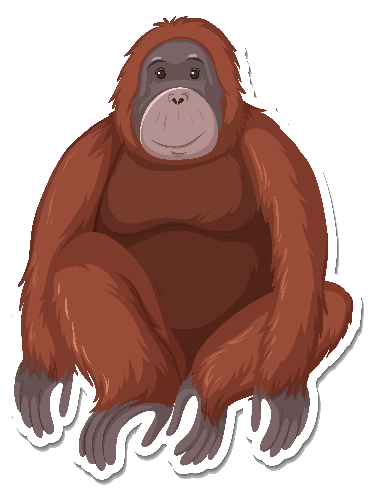

A story of disappearing species and shrinking forests

Malaysia is one of the world's most biodiverse nations — home to ancient rainforests, coral-fringed coastlines, and thousands of species found nowhere else on Earth. Yet this natural wealth is under serious threat.
This visualisation examines 2,512 assessed species across Malaysia, drawing on IUCN Red List data and Global Forest Watch records to tell the story of what is being lost, why it is happening, and where hope remains.
Malaysia is home to thousands of species — but hundreds face extinction.
336 species are Critically Endangered — one step from extinction.
Plants make up the largest group, but mammals face the highest extinction risk per species.
Source: IUCN Red List 2025
Mammals and Insects have the highest proportion of Critically Endangered species — over 28% each.
Corals appear less threatened by proportion, but face severe climate-driven risks not captured here.
Source: IUCN Red List 2025
From palm oil plantations to illegal poaching — Malaysia's wildlife faces threats on every front.
Agriculture and logging are the most widespread threats — affecting nearly every species group.
Corals face a unique triple threat: climate change, invasive species, and pollution all hit simultaneously.
Mammals are the only group where hunting and trapping rivals habitat destruction.
Source: IUCN Red List 2025
58% of species are actively declining — more than half of all assessed wildlife.
Only 4 species show a recovering population trend.
Source: IUCN Red List 2025
Malaysia has lost millions of hectares of forest since 2001 — and agriculture is by far the biggest driver.
Agriculture has dominated forest loss every year since 2001, consistently accounting for over 70% of annual destruction.
Logging surged between 2014 and 2017, reflecting intensified timber extraction in Sarawak and Sabah.
Since 2020, both agriculture and logging have declined — the first sustained drop in two decades.
Source: Global Forest Watch 2025
Agriculture accounts for nearly 74% of all forest loss — far exceeding logging and all other causes combined.
Palm oil and other commodity crops have driven massive land clearance across Sabah, Sarawak and Peninsular Malaysia.
Source: Global Forest Watch 2025
Critically Endangered species are concentrated in Sarawak, Sabah, and the forests of Peninsular Malaysia.
Most Critically Endangered species are found in Sarawak and Sabah — Malaysia's Borneo states, home to some of the oldest rainforests on Earth.
Peninsular Malaysia's central forest spine also harbours significant concentrations of at-risk species.
Source: IUCN Red List 2025
Sarawak records the highest number of threatened species — nearly double that of Sabah.
Urban states like Kuala Lumpur and Putrajaya show near-zero records, reflecting habitat loss rather than species absence.
Source: IUCN Red List 2025
Critically Endangered species cluster heavily in Sarawak and Sabah — the very states facing the most severe deforestation.
This overlap between habitat loss and species risk is not a coincidence — it is a direct consequence of decades of land clearance.
Source: IUCN Red List 2025
Forest loss has declined since its peak in 2014 — but species recovery remains uncertain.
Forest loss peaked at 646,000 hectares in 2014, driven by agricultural expansion in Sarawak and Sabah.
Since 2020, annual loss has dropped by more than half — the lowest levels recorded in two decades.
This decline may reflect stricter logging moratoria and reduced commodity demand, but it is too early to declare recovery.
Source: Global Forest Watch 2025
For most species groups, the number of Critically Endangered species far exceeds those with a stable population trend.
Sharks and Rays, Birds and Fish have zero species with a stable population — every assessed individual is in decline.
Flowering Plants show the closest balance, with 149 stable against 167 Critically Endangered.
Orange dots = Critically Endangered. Blue dots = Stable population.
Source: IUCN Red List 2025
Across every species group, declining populations vastly outnumber stable ones — the scale of collapse is system-wide, not isolated.
Corals, Sharks and Rays, and Birds have virtually no stable populations remaining. Without active conservation, local extinction is a real possibility.
Only Flowering Plants and Monocots show any meaningful stability — a fragile signal in an otherwise bleak picture.
Source: IUCN Red List 2025